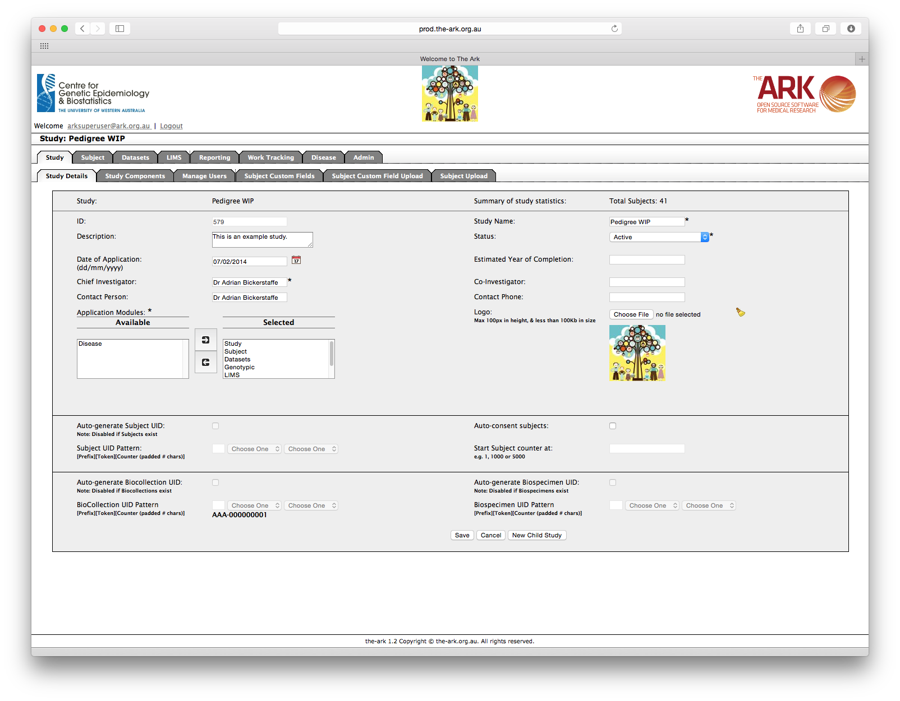

The Ark project was established within the Centre for Genetic Origins of Health and Disease at The University of Western Australia (UWA) in late 2009 to develop an open-source platform to support Australian and international biomedical researchers. The Centre for Epidemiology and Biostatistics, University of Melbourne and the Lions Eye Institute joined the project as collaborators in 2010 and 2014 respectively.
The project aims to provide a secure, highly-configurable web-based research tool that incorporates the majority of the functionality required to conduct a complex study or clinical trial, or operate a research registry. The Ark allows medical researchers without a technical background to self-manage their data using a customisable, user-friendly interface without the need for database/computer programming. Since The Ark is a web-based application, it is accessible from locations worldwide using a web browser, a standard piece of software bundled with most modern desktop, tablet and smart phone operating systems.

The Ark's study details screen